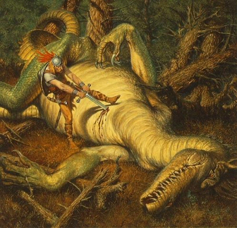

Nidhogg gyermekei

Hosszú
lesz az út. Hosszú és veszélyes. Sokan elesnek majd a hosszú úton, és sokan feladják majd. De
egyszer célba érünk. Egyszer elérünk oda, ahova már oly’ régóta vágyakozunk. Ahol térdre
borulunk majd, sisakunkat levesszük, és úgy csodáljuk majd a hatalmas Életfát.
A hatalmas fát, melynek törzse még egészséges és
erõs, de ágai már korhadtak és betegek. Saját szemünkkel látjuk majd, hogy kúszik a szürke fertõ
végig a faágakon, és hogyan fertõz meg újabb, egészséges részeket. Szemünk láttára hullnak majd a
megfeketedett levelek, és a korhadt ágak. És akkor olyat kell majd tennünk, amit mi igazán nem
szeretnénk. Le kell tennünk kardunkat, s fûrészt, baltát kell helyette kezünkbe vennünk, hogy
megfékezzük a fertõt. Neki kell esnünk magának az élet fájának, és levágni a fertõzött részeket. S
hogy a betegség ne terjedhessen tovább, egészen addig kell visszanyesni az ágakat, ahol már
teljesen egészségesek.
És erre majd felhördülnek sokan. Mert
tudják õk is, hogy ami beteg, ami rossz, azt le kell vágni. De ami egészséges és jó, abban nem
akarnak kárt tenni. És nem értik majd meg, hogy muszáj megtennünk. Muszáj megtennünk, különben a
betegség továbbterjed, és az egész fa elpusztul. Bizony áldozatot kell
hoznunk.
De ti azt mondjátok ez bûn.
De van ennél nagyobb bûn is. Mert ha a fa ágát levágod, idõvel új, egészséges ág nõ majd
helyére. És minden rendben lesz. De ha a fa gyökerét elpusztítod, az egész fa menthetetlenül
elpusztul.
Mit fogunk tehát a sárkánnyal tenni, mely az Életfa
gyökerét rágja? Azt hinnénk mindenki számára egyértelmû, hogy a sárkányt meg kell ölni. De nem.
Lesznek majd, kik elutasítják az erõszakot, és felvetik, hogy nem lehetne-e megbeszélni ezt a
sárkánnyal. Õt, ki az idõk kezdete óta ellenségünk, nem lehetne-e egyszerûen megkérni rá, hogy ne
pusztítsa tovább a fát. Aztán majd áshatunk sokezer gödröt, hogy legyen hova temetni szénné égett
holttesteiket. Mert a sárkánnyal nem lehet beszélni. Elkergetni sem lehet. Ha elkergeted, majd
visszajön, és porig éget mindent, amit addig felépítettünk.
A sárkányt meg kell ölni.
Újra felöltjük hát
csillogó vértünket, magunkhoz vesszük kardunkat, és harcba indulunk. Csodálatos, szörnyû
harcba.
Megindulunk majd a sárkányhoz, kivont karddal, és
meg fogjuk ölni. Meg tudjuk. Nem mondom, hogy könnyû harc lesz. Összemarcangolt és szénné égett
társainkat hosszasan kell majd a harc után takarítanunk. Rengeteg temetés lesz, és rengeteg könny,
de végül gyõzni fogunk. Legyõzzük majd a sárkányt, a hideg pengét szívébe mártjuk, és büszkén
állunk majd felette. Véresen, koszosan, sérülten és fáradtan. De gyõztesen és
büszkén.
És mikor ott állunk majd, s õ az utolsó tûzcsóvát
leheli fel az égre, megpillantunk valamit az Életfa gyökerei közt. Apró, hófehér tojásokat. A
sárkány tojásait.
És akkor majd megint megtorpanunk,
egymásra nézünk, és azon fogunk tanakodni, mit tegyünk a tojásokkal. Mindannyian tudjuk, mit kell
tennünk. Tudjuk, hogy a tojásokból sárkányok fognak kikelni, ezért el kell pusztítanunk
õket.
Mikor ezt kimondjuk, sokan ismét felhördülnek majd.
Megölni? De hát ezek még meg sem születtek! Nem biztos, hogy ezek is olyan gonoszak lesznek majd,
mint Nidhogg. Mi van, ha ezek jó sárkányok lesznek? És egyébként is, megölni õket NEM SZABAD. Mert
mi nem ölünk gyermekeket. Mert mi vagyunk a jó, a fény képviselõi. Mert a mi kezünkhöz nem
tapadhat gyermekek vére. A sárkány nem válogatott, ez igaz. Lángoló falvak, síró asszonyok, és
halott gyermekek maradtak utána, amerre járt. De mi ezt nem tehetjük meg. Mert mi jók vagyunk.
Ezért úgy fogunk majd dönteni, hogy megkíméljük a tojásokat, és ott hagyjuk azokat az életfa
tövében.
De én nem. Én ezt nem fogom hagyni. Nem fogom
hagyni, hogy kikeljenek a sárkányok, és felcseperedvén az én gyermekeimet és unokáimat gyilkolják
majd. Nem fogom hagyni, hogy elrágják az életfa gyökerét, melyért annyian áldoztuk életünket. Nem!
Én ezt nem fogom hagyni! És nem én leszek az egyetlen.
Ezért majd
mi, mi páran, éjszaka kilopózunk a fához, és összetörjük a tojásokat. Mindet. A még meg nem
született kis sárkányok velõtrázó sikolyába mind beleõrülünk majd. Mind meg fogunk õrülni, mert
megöltük õket. De ez nem számít. Nem magunkért tesszük. Hadd legyek én a bûnös, tapadjon vér az én
kezemhez, feketedjen meg az én szívem! De a gyermekeimet nem hagyom. NEM! Vegyetek el tõlem
mindent! Vegyétek el a szabadságom, a jövõm, az életem! De a gyermekeim jövõjét nem vehetitek el.
Õket nem hagyom. Legyek átkozott örökre! Égjek az örökkévalóságig a pokol legsötétebb bugyrában!
Legyek én a bûnös!
De a gyermekeim, a gyermekeink, már ne
ismerjék meg a bûnt. Szenvedjek én, de õk már soha többet.
Vagy haljunk hát hiába? Építsük fel hatalmas kastélyainkat, hogy azok leboruljanak majd?
Neveljük fel gyermekeinket, hogy õk elégjenek majd? Gondozzuk az életfát, hogy az kidõljön majd?
Öljük meg a sárkányt, hogy aztán gyermekei álljanak majd bosszút fiainkon?
Nem!
Mi össze fogjuk törni a tojásokat.
Mindet!
És a következõ nap hajnalán ezért ti a bitóhoz
kísértek. Ti, akik bajtársaim voltatok. Ti, akikkel együtt gyõztük le a sárkányt. És nyakam köré
tekeritek majd a kötelet, és megkötitek a tarkóm mögött szorosan.
Én pedig csak mosolygok majd. Mosolygok, mert bánatra nem lesz okom. Hiszen az én életem
oly keveset ér. És oly sokat a mi gyermekeink jövõje. És oly sokat ér a szent cél, amiért én
mindenem feláldozom majd. Nem csak az életem, de a becsületem, a tisztaságom, és ha kell, kiirtok
magamból mindent, ami jó. De meg fogom tenni.
És nekem
soha senki nem lesz hálás. Soha, senki nem áldja majd a nevemet. Átkozni fognak örökre, mert amit
tettem bûn. De értetek válok én bûnössé.
Nem, nem
kell, hogy most engem megérts. Ebben a történetben nem én vagyok a jó. Amit teszek, csupán az a jó.
És annak jelentõsége felülmúl minden törvényt, melyet akár ember, akár Isten
hozott.
Mert inkább legyek hõs egy pillanatig, mint
rabszolga egy életen át. És inkább legyek bûnös egy napig, mint hogy gyermekeim szenvedjenek egy
életen át.